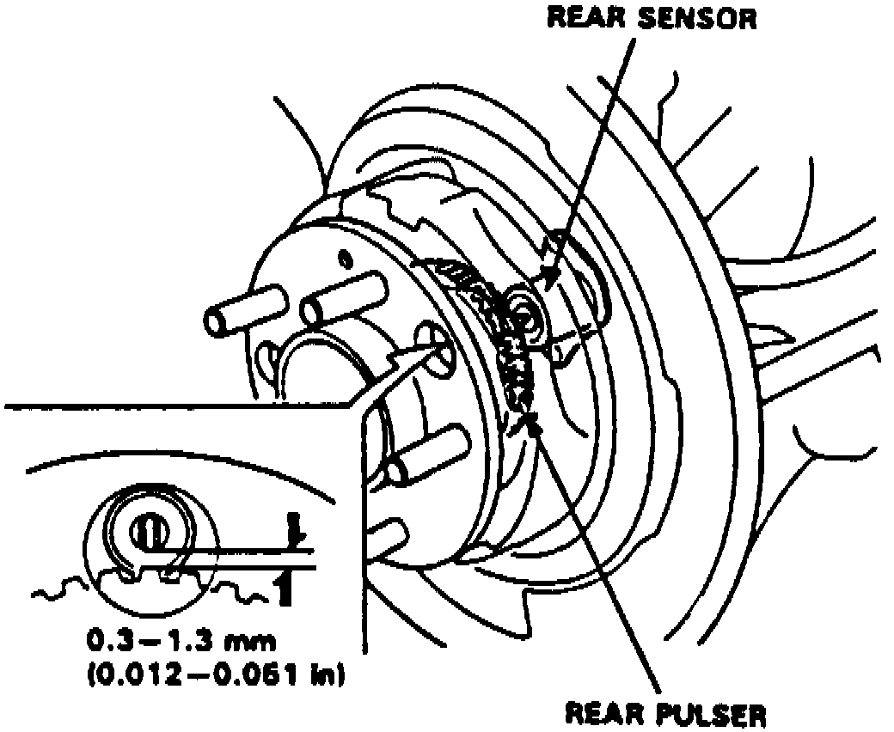
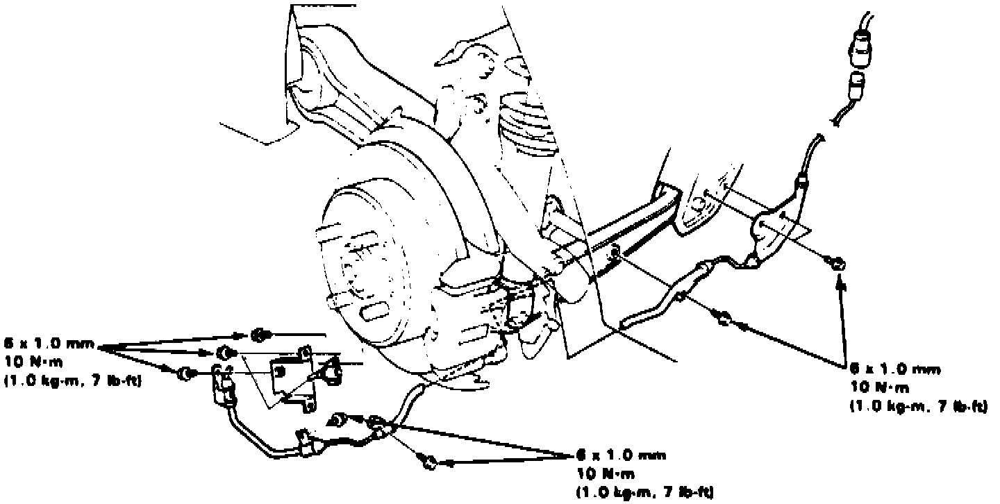

Rear
Fig. 109 Rear Wheel Sensor:

1. Inspect sensor for chipped or damaged teeth.
2. Measure air gap between sensor and pulser, Fig. 109, while rotating driveshaft manually. If gap exceeds specifications, replace distorted knuckle.
3. On models with Supplemental Restraint System (SRS), wire harness is yellow. Do not use electrical equipment on these circuits. Do not damage SRS wire harness when servicing sensors.
Fig. 116 Rear Sensors/Pulsers:

4. When installing sensors, do not twist wires; use white wire tracer as a guide, Fig. 116.
5. Confirm sensor operation.